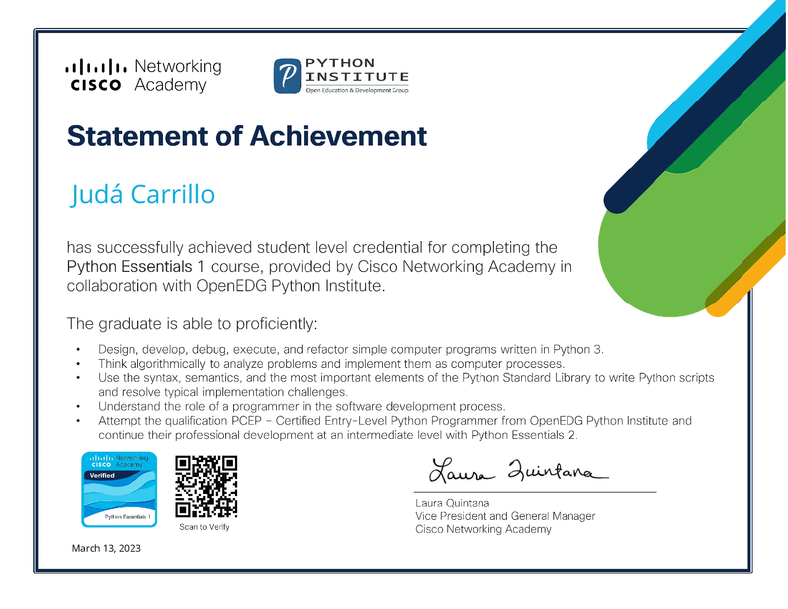
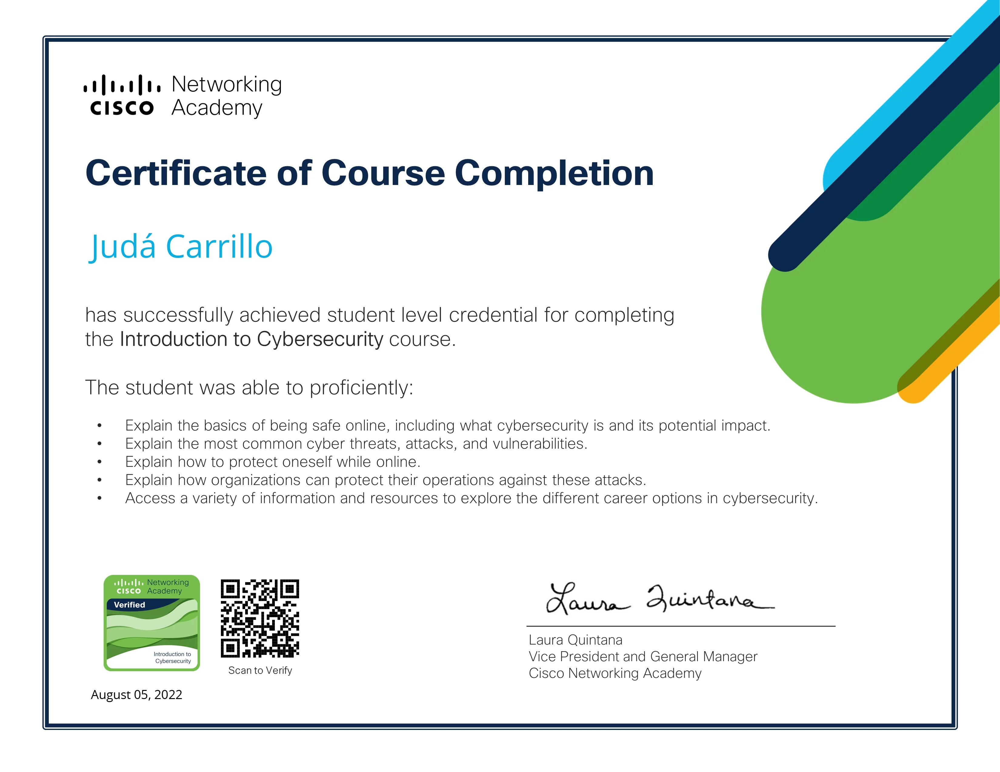
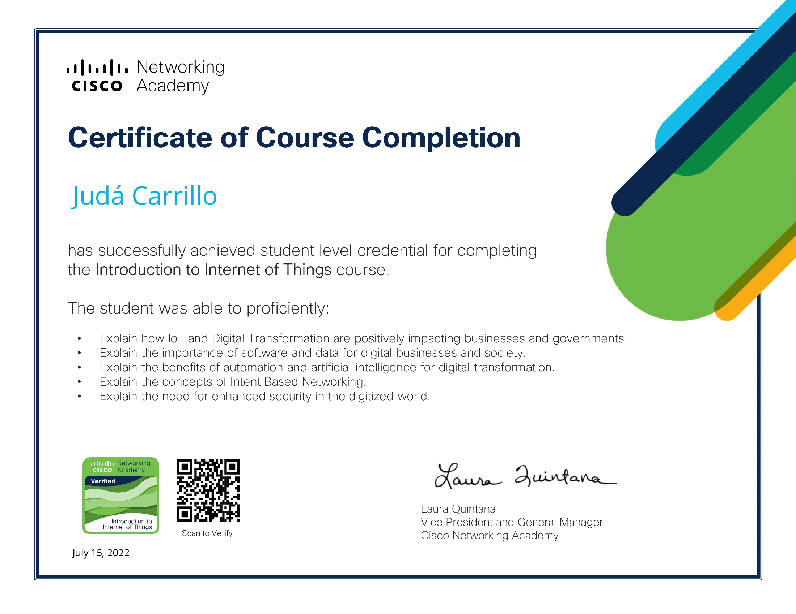

Curriculum
Soy una persona apasionada por la tecnología y la innovación, mi nombre es Judá Carrillo. Mi enfoque actual se centra en adquirir habilidades en el área de Ingeniería de Software y mi objetivo es convertirme en un profesional competente y versátil en el desarrollo de soluciones tecnológicas que contribuyan al bienestar y progreso de la sociedad. Durante mi formación académica y proyectos personales, he adquirido conocimientos en programación, diseño de software y manejo de herramientas tecnológicas. Me entusiasma seguir aprendiendo y afrontando nuevos desafíos en este campo en constante evolución.
Educación
Primaria & Secundaria
2012 - 2022
PRIMARIA:
Escuela de Educación Primaria "Perú-Italia", Lima, Perú
(2012 - 2017)
SECUNDARIA:
Institución Educativa "Gustavo Mohme Llona", Lima, Perú
(2018 - 2022)
Completé exitosamente mi educación básica, culminando tanto la primaria como la secundaria con un destacado rendimiento académico. Estos años de formación me brindaron una sólida base educativa para continuar mi camino hacia la educación superior.
Educación Técnica
2022 - 2025
Instituto SENATI, Lima, Perú
Actualmente, estoy cursando la carrera de Ingeniería de Software con Inteligencia Artificial en el Instituto SENATI, donde he adquirido habilidades y conocimientos prácticos para resolver problemas utilizando diversas tecnologías y herramientas. Mi entusiasmo por seguir aprendiendo y creciendo en este campo en constante evolución es cada vez mayor.
Proyectos
Proyecto de aplicación web personal
2023
Instituto SENATI, Lima, Perú
- Desarrollé una aplicación web personal utilizando HTML, CSS, JS y jQuery con el objetivo de publicitar mi hoja de vida y mi experiencia profesional. El portal cuenta con un diseño responsive y dinámico que permite a los visitantes recorrer fácilmente mi perfil y habilidades. Además, incluí un formulario de contacto para que los interesados puedan ponerse en contacto conmigo y una ubicación en Google Maps para facilitar la ubicación de mi oficina.
- También incluí cinco enlaces relevantes para demostrar mi conocimiento y experiencia en diferentes áreas relacionadas con mi perfil profesional. Por último, utilicé fotos de alta calidad para mostrar mis trabajos y proyectos anteriores.
- Este proyecto me permitió adquirir habilidades en el desarrollo web, incluyendo el uso de lenguajes de programación y herramientas para mejorar la experiencia del usuario en línea.
Proyectos (continuación)
Proyecto en Python - Ferretería "El Tornillo"
2023
Instituto SENATI, Lima, Perú
- Desarrollé una aplicación en Python con interfaz gráfica utilizando Tkinter para la Ferretería "El Tornillo", que permitía registrar pedidos por teléfono y generar un reporte para el repartidor.
- Diseñé un diagrama de flujo y escribí el código fuente en Python para resolver el problema planteado.
- Presenté un informe detallado sobre el procedimiento utilizado para desarrollar la solución.
- Adquirí habilidades en programación y en la implementación de interfaces gráficas en Python, así como en la resolución de problemas y en la creación de soluciones prácticas para clientes con recursos limitados.
Proyecto en Java - Creación de un proyecto de inventario en Java
2023
Instituto SENATI, Lima, Perú
- Desarrollé un proyecto en Java de un sistema de inventario que utilizaba programación orientada a objetos (POO), incluyendo conceptos de herencia y polimorfismo. Este proyecto avanzó al ritmo del usuario en las secciones 4, 5, 6 y 7 del curso, permitiendo realizar más aportaciones después de cada sección y culminando en la creación de una aplicación Java completa para mantener el inventario.
- En el proyecto, utilicé la herencia para definir clases generales y especializadas, y el polimorfismo para hacer que estas clases funcionen de manera conjunta en el sistema de inventario. Además, diseñé y escribí el código fuente de las diferentes clases del proyecto, lo que me permitió adquirir habilidades en la implementación de POO en Java y en la resolución de problemas en la creación de soluciones prácticas para clientes con necesidades específicas en el manejo de inventarios.
- Presenté un informe detallado sobre el procedimiento utilizado para desarrollar la solución.
- Adquirí habilidades en programación en Java y en la creación de aplicaciones completas para mantener inventarios.
Habilidades
Poseo habilidades sólidas en diversos campos de la programación y diseño web. Lo que me permite abordar proyectos con confianza y eficacia
Servicios
Ofrezco una variedad de servicios de desarrollo de software y análisis de datos, incluyendo el diseño y desarrollo de aplicaciones web y la automatización de procesos empresariales para mejorar la eficiencia y la productividad. Estoy comprometido en proporcionar soluciones personalizadas y de alta calidad para satisfacer las necesidades de mis clientes.
Desarrollo de aplicaciones web
Creación de aplicaciones para ser utilizadas en la web, utilizando tecnologías de programación como HTML, CSS y JavaScript, que permiten interactuar con los usuarios a través de un navegador web.
Automatización de procesos
Uso de herramientas tecnológicas para simplificar o eliminar tareas manuales repetitivas y mejorar la eficiencia y productividad de una empresa.
Análisis de datos
Proceso de recopilación, limpieza, organización y evaluación de datos con el objetivo de obtener información útil para la toma de decisiones.
Desarrollo de software personalizado
Creación de programas informáticos a medida para satisfacer necesidades específicas de una empresa o individuo.
Certificaciones
  Contacto
Si estás interesado en contactarme, no dudes en enviarme un correo electrónico. Estoy disponible para hablar sobre posibles oportunidades de colaboración o responder cualquier pregunta que tengas. ¡Espero saber pronto de ti!.